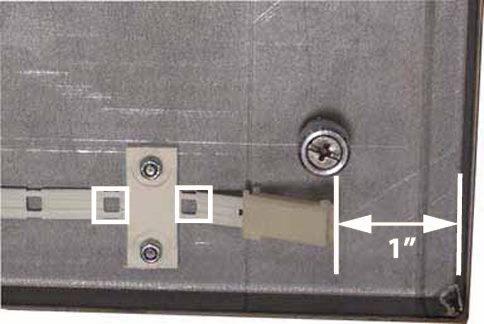
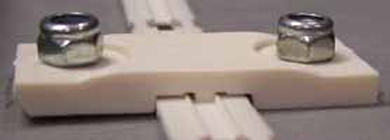
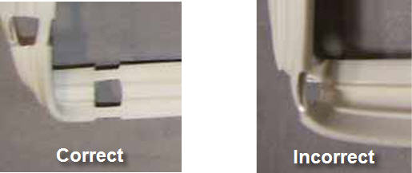
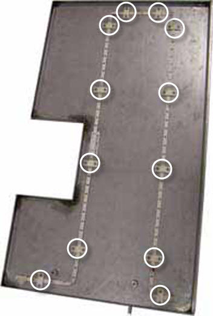
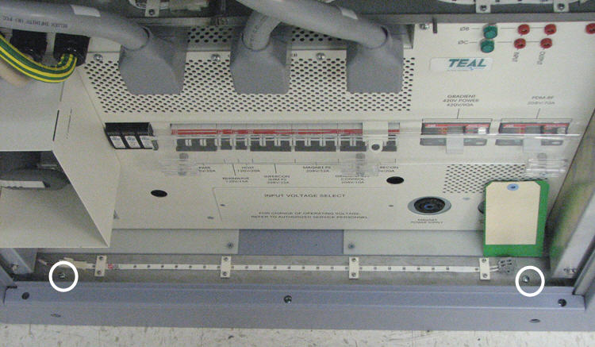
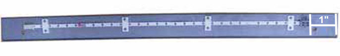
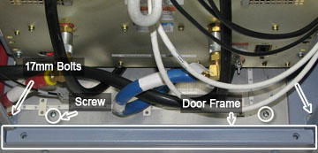
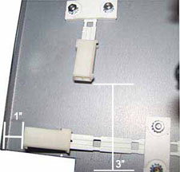
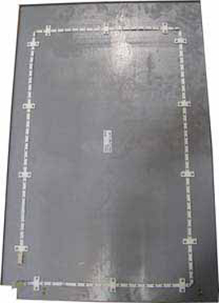

Operating Documentation
Direction 5670000, Rev# 1
Module Version 2.0, Version Date 8/19/08
Operating Documentation |
Power down the PDU according to the following procedure, LOTO for the PGR PDU/Gradient Subsystem.
Remove cables J12 and J13 from the PDU. This will allow access to the Right PDU Leak Sensor Tray.
Illustration 1: Remove PDU cables

Unplug the two (2) leak sensor strip connectors on both sides of the tray using the white quick disconnect.
Illustration 2: Unplug Leak Sensor Strip Connectors

Loosen the two (2) thumb screws on the top of the tray.
Pull out the tray from the cabinet.
Remove all 12 retainers holding the leak sensor strip to the tray.
Illustration 3: Remove 12 Retainers

Remove sensor strip.
Start routing the new leak sensor strip approximately 1” from the right edge of the tray. The strip should be seated so that the first and second open wire holes fall on either side of the retainer.
Illustration 4: Properly Seated Leak Sensor Strip

Illustration 5: Properly Seated Retainer

Tighten the nuts for each retainer.
Continue routing the sensor strip and retainers, making sure that bends do not cause the open wire holes to cross each other. See Illustration 6.
Illustration 6: Bending Leak Sensor Strip

Illustration 7: Fully Routed Leak Sensor Strip

Slide the tray into the right side of the cabinet.
Tighten the two (2) thumb screws to secure the tray to the cabinet.
Reconnect the leak sensor strip connectors on both sides of the tray.
Reconnect cables J12 and J13 to the PDU.
This procedure takes 45 minutes from beginning to finalization.
Follow steps 1 - 5 in Removing the Leak Sensor Strip to remove the Right PDU Leak Sensor Tray. This will allow access to the Left PDU Leak Sensor Tray.
Unplug the remaining leak sensor strip connector on the Left PDU Leak Sensor Tray.
Remove the two (2) thumb screws on the top of the tray.
Slide the Left PDU Leak Sensor Tray to the right in the cabinet and pull it out.
Illustration 8: Slide Over Left PDU Leak Sensor Tray

Remove all 12 retainers holding the leak sensor strip to the tray.
Illustration 9: Remove 12 Retainers

Remove sensor strip.
Start routing the new leak sensor strip approximately 1” from the right edge of the tray. The strip should be seated so that the first and second open wire holes fall on either side of the retainer. See Illustration 4. The retainer should lay properly on top of the sensor strip before tightening. See Illustration 5.
Tighten the nuts for each retainer.
Continue routing the leak sensor strip and retainers, making sure that bends do not cause the open wire holes to cross each other. See Illustration 6. When complete, the fully routed leak sensor strip should look like this:
Illustration 10: Fully Routed Leak Sensor Strip

Push the Left Leak Sensor Tray into the right side of the cabinet and slide it over to the left side. See Illustration 8.
Tighten the two (2) thumb screws to secure the tray to the cabinet.
Slide the Right Leak Sensor Tray into the right side of the cabinet.
Tighten the two (2) thumb screws to secure the tray to the cabinet.
Reconnect the leak sensor strip connectors for both trays (4 connections total).
Reconnect cables J12 and J13 to the PDU.
This procedure take about 25 minutes from beginning to finalization.
Power down the PDU according to the following procedure, LOTO for the PGR PDU/Gradient Subsystem.
Unplug the leak sensor strip connectors on the left side of the tray.
Remove the two (2) screws holding the XGD Leak Sensor Tray to the base of the cabinet.
Illustration 11: Remove XGD Leak Sensor Tray Screws

Remove the tray from the cabinet.
Remove the four (4) retainers holding the leak sensor strip to the tray.
Start routing the new leak sensor strip approximately 3 inches from the right edge of the tray, with the grey connector to the right side. The strip should be seated so that the first and second open wire holes fall on either side of the retainer.
Illustration 12: Routing the Leak Sensor Strip

Tighten the nuts for each retainer.
Position the XGD Leak Sensor Tray at the base of the cabinet.
Tighten the two (2) screws to secure the tray to the cabinet.
Power down the PDU according to the following procedure, LOTO for the PGR PDU/Gradient Subsystem.
Remove the RF door and set to the side.
Remove the two (2) screws holding the RF Leak Sensor Tray to the base of the cabinet.
Illustration 13: Remove RF Leak Sensor Tray

Remove the lower door frame Illustration 13.
Unplug both leak sensor strip connectors on the far left side of the tray. See Illustration 2
Remove the tray from the cabinet.
Remove all 14 retainers holding the leak sensor strip to the cabinet.
Illustration 14: Remove 14 Leak Sensor Strips

Remove sensor strip.
Start routing the new leak sensor strip clockwise approximately 1” from the left edge of the tray. The strip should be seated so that the second and third open wire holes fall on either side of the retainer.
Illustration 15: Routing the Leak Sensor Strip

Tighten the nuts for each retainer.
Continue routing the leak sensor strip and retainers, making sure that bends do not cause the open wire holes to cross each other. See Illustration 6. When complete, the fully routed leak sensor strip should look like this:
Illustration 16: Fully Routed Leak Sensor Strip

Position the RF Leak Sensor Tray at the base of the cabinet.
Tighten the two (2) screws to secure the tray to the cabinet.
Reinstall 17mm bolts (see Illustration 13).
Reinstall lower door frame (see Illustration 13).
Re-connect the leak sensor strip connectors.